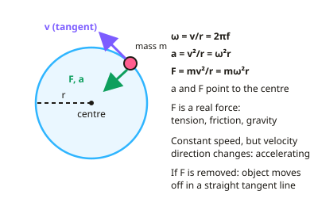

A-level Physics Year 13 · Topic 6
Further mechanics and thermal physics
Further mechanics and thermal physics covers motion in circles, oscillations, and the physics of heat and gases.
We will use angular speed and centripetal force, including vertical circles, conical pendulums and banked tracks, then simple harmonic motion and its energy changes.
We also look at specific heat capacity, latent heat, the gas laws and kinetic theory.
- 6 subtopics
- 361 questions
- Free: 6.1 notes and 10 questions
In this topic
- 6.1Circular motionFree below · 62 questions
- 6.2Simple harmonic motionOpen in Full Marks · 62 questions
- 6.3Thermal physics and gasesOpen in Full Marks · 61 questions
- 6.4Applications of circular motion: vertical circles, conical pendulums and banked tracksOpen in Full Marks · 61 questions
- 6.5Energy changes in SHM and energy–displacement graphsOpen in Full Marks · 55 questions
- 6.6Mass–spring systems and the simple pendulum: periods and graphsOpen in Full Marks · 60 questions
6.1 · Free notes
Circular motion

Key points
- An object moving in a circle at constant speed is accelerating, because its velocity direction changes continuously.
- Angular speed ω = v ÷ r = 2πf. Centripetal acceleration a = v² ÷ r = ω²r.
- Centripetal force F = mv² ÷ r = mω²r, always directed towards the centre of the circle. It is provided by a real force such as tension, friction or gravity.
- If the centripetal force is removed, the object continues in a straight line along the tangent.
In more detail
- Worked centripetal force: a 0.20 kg ball on a 0.50 m string at 3.0 m s⁻¹ → F = 0.20 × 3.0² ÷ 0.50 = 3.6 N.
- Worked angular speed: a wheel turning at 600 rpm → f = 10 Hz → ω = 2π × 10 = 62.8 rad s⁻¹.
- Radians: one radian is the angle when the arc length equals the radius; 2π rad = 360°.
- Satellite link: for a satellite, gravity provides the centripetal force, so GMm/r² = mv²/r.
Practice
Circular motion: 10 questions
Pick an answer to check it, or open the answer for the explanation.
1. What is the direction of centripetal acceleration?
- Along the tangent
- Towards the centre of the circle
- Away from the centre
- Opposite to motion
Show answer
B: Towards the centre of the circle. The velocity changes direction towards the centre.
2. Which expression gives centripetal acceleration?
- v ÷ r
- v² ÷ r
- vr
- r ÷ v²
Show answer
B: v² ÷ r. a = v² ÷ r = ω²r.
3. What provides the centripetal force for a car turning a corner?
- Gravity
- Friction between tyres and road
- Air resistance
- Its weight only
Show answer
B: Friction between tyres and road. Without enough friction, the car cannot follow the curve.
4. What happens if the centripetal force suddenly disappears?
- The object moves outwards radially
- The object continues in a straight line along the tangent
- The object stops
- The object speeds up
Show answer
B: The object continues in a straight line along the tangent. This follows from Newton's first law.
5. What is the angular speed of an object completing 2 revolutions per second?
- 2 rad/s
- 4π rad/s
- π rad/s
- 1 rad/s
Show answer
B: 4π rad/s. ω = 2πf = 2π × 2 = 4π rad/s.
6. A car of mass 900 kg travels around a bend of radius 50 m at 10 m/s. What is the centripetal force needed?
- 90 N
- 180 N
- 1800 N
- 4500 N
Show answer
C: 1800 N. F = mv² ÷ r = 900 × 100 ÷ 50 = 1800 N.
7. A satellite orbits Earth in a circle at constant speed. Which statement about its motion is correct?
- It has no acceleration because its speed is constant
- It accelerates in the direction of its motion
- It accelerates towards the centre of the orbit
- The resultant force on it is zero
Show answer
C: It accelerates towards the centre of the orbit. Velocity is a vector, so changing direction means acceleration. This is directed towards the centre. Constant speed does not mean zero acceleration, so a resultant force exists.
8. A wheel completes one rotation every 0.25 s. What is its angular speed?
- 4.0 rad/s
- 12.6 rad/s
- 25 rad/s
- 1.6 rad/s
Show answer
C: 25 rad/s. ω = 2π ÷ T = 2π ÷ 0.25 = 25 rad/s. Using 1/T gives 4.0, which is the frequency in Hz, not the angular speed.
9. A 0.20 kg mass on a string moves in a horizontal circle of radius 0.80 m at 4.0 m/s. What is the tension in the string?
- 1.0 N
- 4.0 N
- 16 N
- 0.64 N
Show answer
B: 4.0 N. T = mv²/r = 0.20 × 4.0² ÷ 0.80 = 4.0 N. Forgetting to square the speed gives 1.0 N.
10. The speed of an object in circular motion is doubled at the same radius. What happens to the centripetal force needed?
- It doubles
- It quadruples
- It halves
- It stays the same
Show answer
B: It quadruples. F = mv²/r, so force is proportional to v². Doubling v multiplies the force by 2² = 4.
Keep going in Full Marks
Full Marks has 62 questions on Circular motion (52 more than here), set out in practice levels. You also get notes and 3D models for all 6 subtopics of Further mechanics and thermal physics, plus games, timed exams and past papers.
On your exam board
- AQATopic 6.1: Periodic motion, Topic 6.2: Thermal physics
- OCR ATopic 5.1: Thermal physics, Topic 5.2: Circular motion, Topic 5.3: Oscillations
- OCR BTopic 5.1: Creating models, Topic 5.2: Out into space, Topic 5.4: Matter: very simple
- EdexcelTopic 6: Further mechanics, Topic 9: Thermodynamics, Topic 13: Oscillations
- CambridgeTopic 12: Motion in a circle, Topic 15: Ideal gases, Topic 17: Oscillations